Sala 1 DES
Conheça a sala do primeiro ano do ensino médio integrado ao técnico em desenvolvimento de sistemas da Etec de Peruíbe.
Feito por: Anthony, Everton e Matheus S.
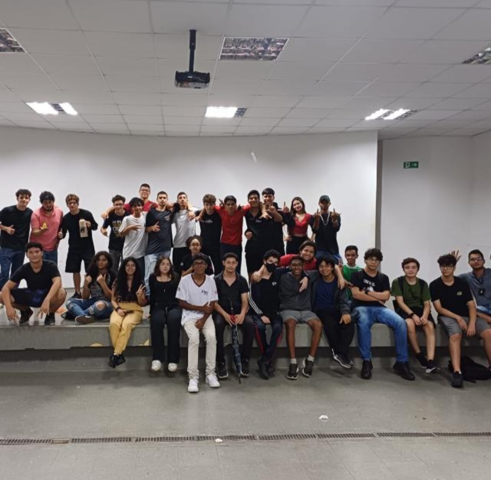
 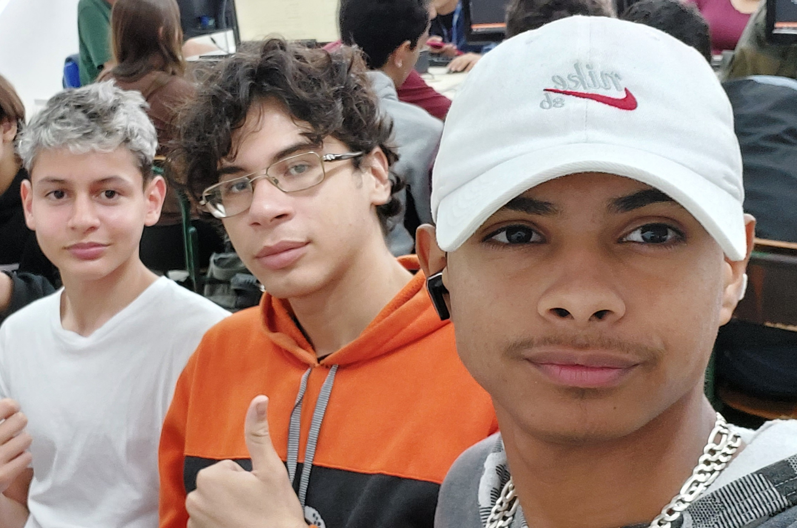
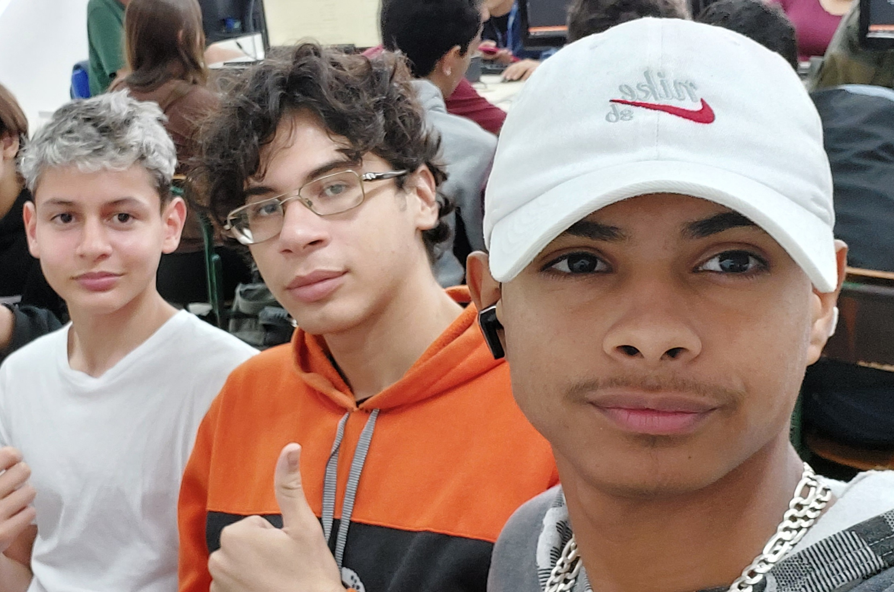
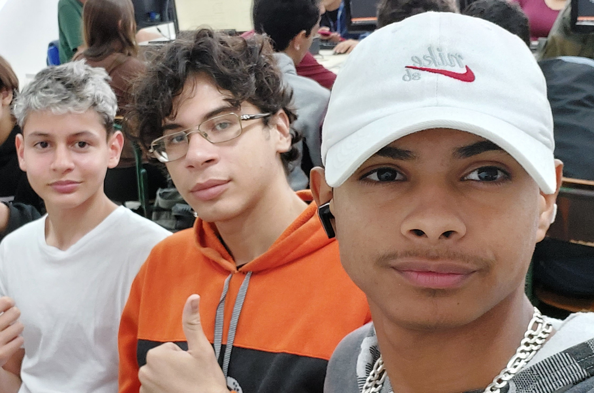
Técnicas de Programação e Algoritmo
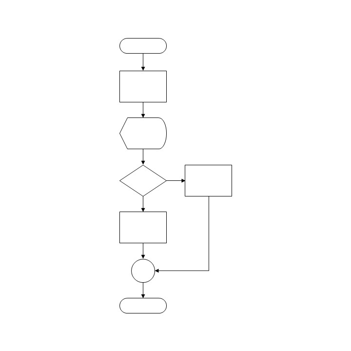
Técnicas de Programação e algoritmo (TPA), é a matéria onde estudamos a lógica da Programação, através do desenvolvimento de pequenos projetos e resolvendo desafios.
Programação Web
Na matéria de Programação Web estudamos a criação de páginas para a web através de ferramentas como o HTML, CSS e Javascript.

Banco de dados
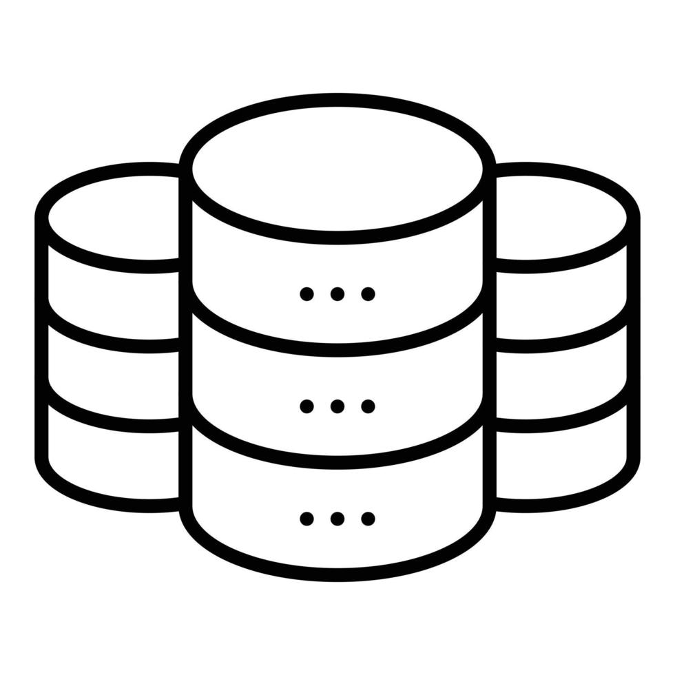
Nessa matéria estudamos a estrutura e o desenvolvimento dos bancos de dados.
Design Digital
Em Design Digital (DD), estudamos a criação de interfaces visuais e anúncios para o meio digital.
Análise e Projeto de Sistemas
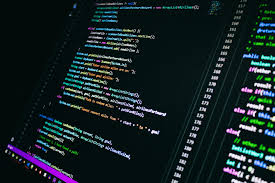
Nessa matéria estudamos o desenvolvimento de projetos de sistemas para empresas.
Práticas de Empreendedorismo
Matéria focada no estudo da administração do seu própio negócio.
Laboratório de investigação científica
Em Lic aprendemos a fazer pesquisas e a formatação de documentos.
Língua Portuguesa e Literatura
Estudo da linguagem do nosso respectivo país e suas variantes. Também estudamos sobre a história e a evolução das obras literárias ao longo dos anos e sua importancia.

Língua Estrangeira Moderna
Em Lic aprendemos a fazer pesquisas e a formatação de documentos.
Matemática
ciência que busca estabelecer, de maneira clara e estruturada, conceitos e técnicas para a compreensão de fenômenos. Entre os tópicos de estudo da Matemática, estão os números e suas operações, as estruturas algébricas, as formas geométricas, a probabilidade, a análise de dados, entre muitos outros.
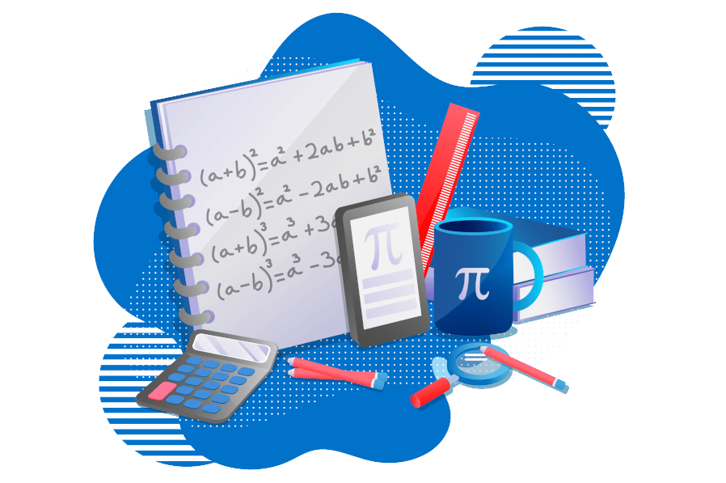
História
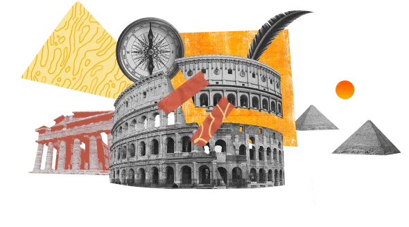
Estudo da história sobre grandes acontecimentos passados e nossos antepassados.
Física
ciência voltada ao estudo dos fenômenos naturais, baseando-se em teorias e por meio da observação e experimentação.

Química
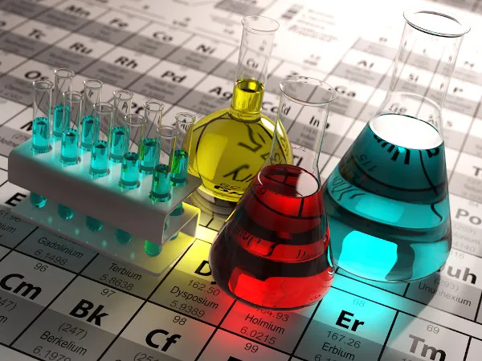
Estudo científico da constituição da matéria, suas propriedades, transformações e as leis que as regem.
Educação Física
Treinamento de atividades físicas e aprimoramento de táticas em esportes individuais e coletivos.
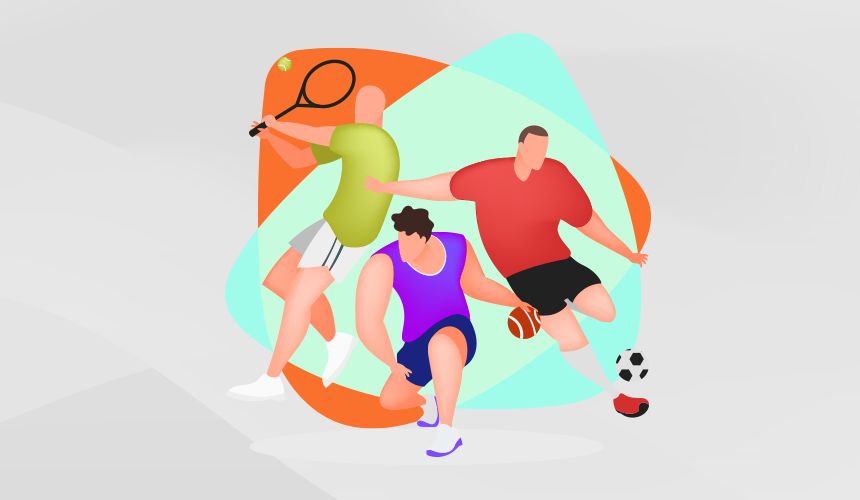
Artes
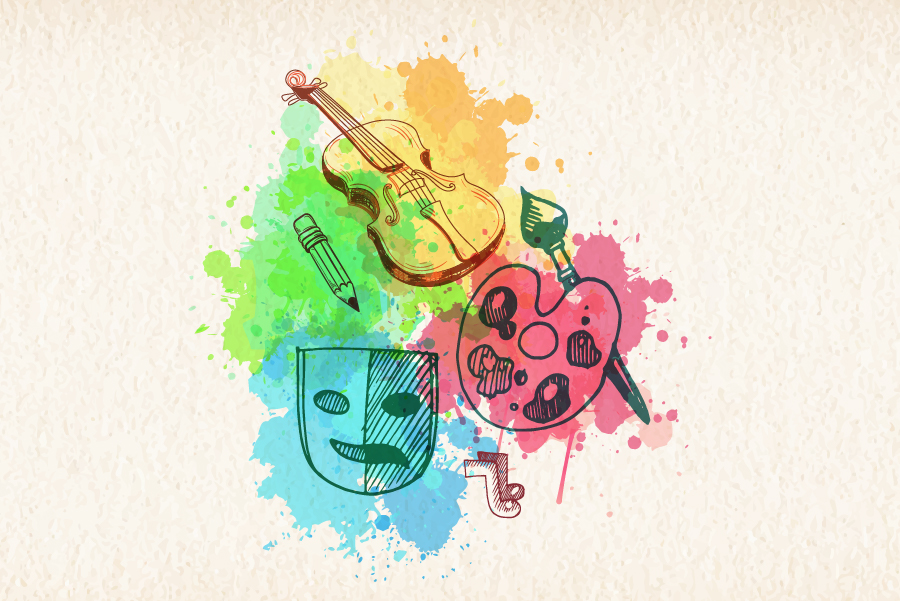
Estudo sobre a arte no decorrer da humanidade desde a arte rupestre até a atualide.
Estudos Avançados de Matemática e suas Tecnologias
O estudo de fundamentos e cálculos próprios das Ciências Exatas, estimulando esforços na resolução de problemas e no desenvolvimento do raciocínio lógico.
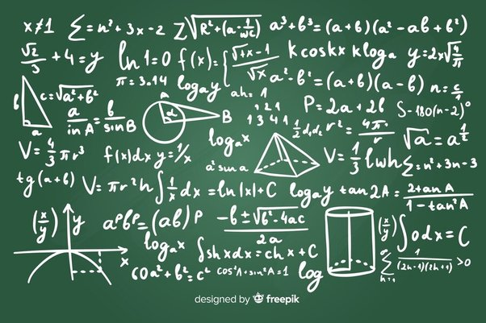
Estudos Avançados de Ciências da Natureza e suas Tecnologias
O estudo dos efeitos das atividades humanas sobre os ecossistemas e a análise do meio ambiente e seus fatores físicos, químicos, biológicos, econômicos, sociais e culturais.